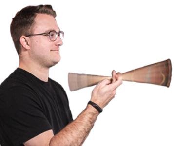
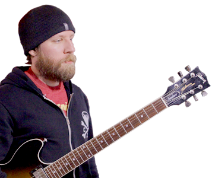

Mr. Carnivore is a four piece indie rock band based in Cleveland Ohio.
All of us have been writting, recording and performing music our entire lives.
Our first self recorded album (Blue Light) was released in 2018,
and we are working on more to share...
...
The group’s founders and brothers Pat LaGuardia (lead vocalist and guitar) and Joe LaGuardia (bass),
have been playing music together since a young age. Pat has written 100s of songs over the
years as a solo artist and Joe has been in several bands and has played with many artists
over the same period. In the process of helping put on a local open mic they realized playing
together was pretty natural and pretty powerful. Pat’s songs, inspired by such artists as,
The Avett Brother, Bon Iver, and The Milk Carton Kids, were well received at the open mic. Joe,
influenced by active artists such as The Foo Fighters and Beck, immediately realized that it
was necessary to record the songs with a full band and release them on a full scale.
From an early age, the members of Mr. Carnivore knew that playing music was something
that inspired them and was something they wanted to do long term. Everyone feels
very lucky to be able to create in an atmosphere that does not rely on ego or self interest,
but relies on an unfiltered focus to do what they feel is the best for the portrayal of the
music. This is not a just a group of musicians, but a group of friends. The members feel that
this greatly benefits the music because you can feel the love for the music and for each other
in the compositions. The goal with this band is to create a community surrounding their
music. Family and friends are the base of Mr. Carnivore’s following, but the inclusive nature
of the group is something that is felt beyond this inner circle. Bassist Joe LaGuardia says,
“the music may come from within this small group, but is meant for everyone.”
Mr. Carnivore is actively pushing their music out on all fronts by obtaining press,
airplay, placements and live shows. Pay attention to the groups news feed to see how you
can engage and enjoy Mr. Carnivore.
Patrick LaGuardiaVocals/Guitar Gear: Martin D-15 Special, 97 American Fender Tele "I grew up on the Beatles and have been living on the likes of Milk Carton Kids, Bahamas, Margaret Glaspy, Avett Brothers and Mac Demarco. I've had a passion for song writing as a form of therapy for as long as I can remember. My family and friends taught me how to sing." |
Joey "Tones" LaGuardiaBass/Vocals Gear: Fender Jazz Bass, Acoustic B1000HD Head "I'm a bass player with electric tastes. Outside of Mr. Carnivore you can hear me in my past projects of The Shadow Division, Dan Miraldi & the Albino Winos and Motter Flynn" |
|---|---|
Pat "Pockets" HakosDrums/Vocals Gear: Gretsch Catalina Club Kit, Sabian cymbals "I grew up watching my father play around Cleveland with his band, The Other Brothers. I fell in love with music at a young age playing drumms in my former pop-punk quartet, Rough Draft." |
Joey "FB" SobekGuitar/Vocals Gear: Gibson Midtown, Vox AC-15 "Guitarist from Made Like Trees. Brainwashed at a young age with classic rock and blues. I prefer to go through life with a guitar, or a golf club in my hands." |
“Blue Light is an imtimate and impassioned outpouring of raw music and emotion...”
“While Mr. Carnivore may be a relatively new band, they are already catching the attention of many music lovers across the state and the region.”
“One of Cleveland's newest alt-rock bands, Mr. Carnivore, has been hard at work self-recording new music over the past few months.”
“Northeast Ohio has a history of producing groundbreaking, genre-defining music acts – Devo, The Black Keys, The Michael Stanley Band, Red Sun Rising and following hot on the heals of those trendsetters are Mr. Carnivore.”
- Dave Derher, NEO Music Scene (Jan 25, 2018)
| Call Sign | State | ID |
|---|---|---|
| WJCU | Ohio | John Carrol |
| WRDL | Ohio | Ashland University |
| WXCU | Ohio | Capital University |
| KUR | Pennsylvania | Kutztown University |
| WCLH | Pennsylvania | Wilkes University |
| WSOE | North Carolina | Elon University |
| KRUX | New Mexico | New Mexico State University |
| 1VFM | Tuggeranong | The Valley FM |
| SimLive | Germany | Sim Live Radio |
| KXZY | Oklahoma | Oklahoma State University |
Links
Website: mrcarnivoreeats.com
Facebook: facebook.com/MrCarnivoreBand
Twitter: Twitter.com/MrCarnivore_
YouTube: YouTube.com/channel/UCgQuLRedkxCFrA2-oHgZHsw"
Instagram: instagram.com/Mr_Carnivore
Reverbnation: ReverbNation.com/MrCarnivore
Bands In Town: BandsInTown.com/Mr.Carnivore
Bandcamp: MrCarnivore.Bandcamp.com
Downloads
The press pack contains band logos, press release and photographs.
By downloading the press pack you are agreeing to only use the material for the promotion of any event with Mr. Carnivore.
Press Pack: drive.google.com (PressPack)